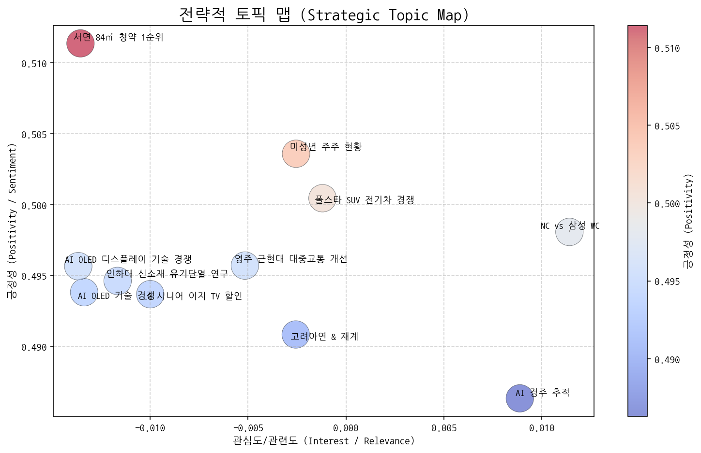
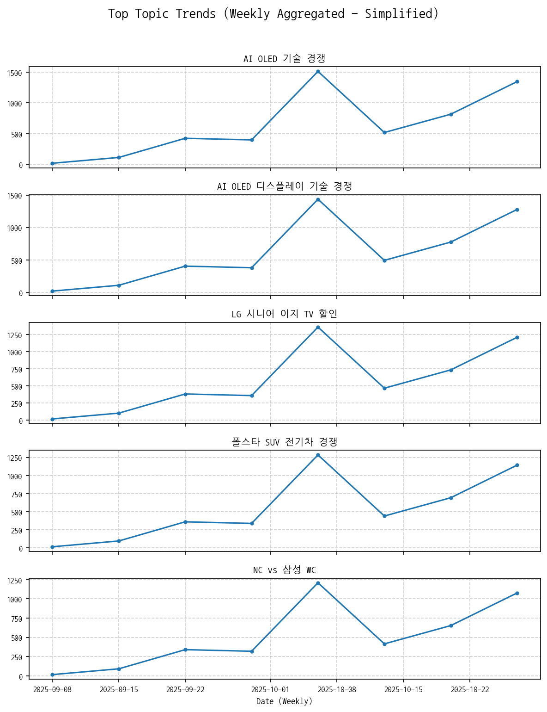
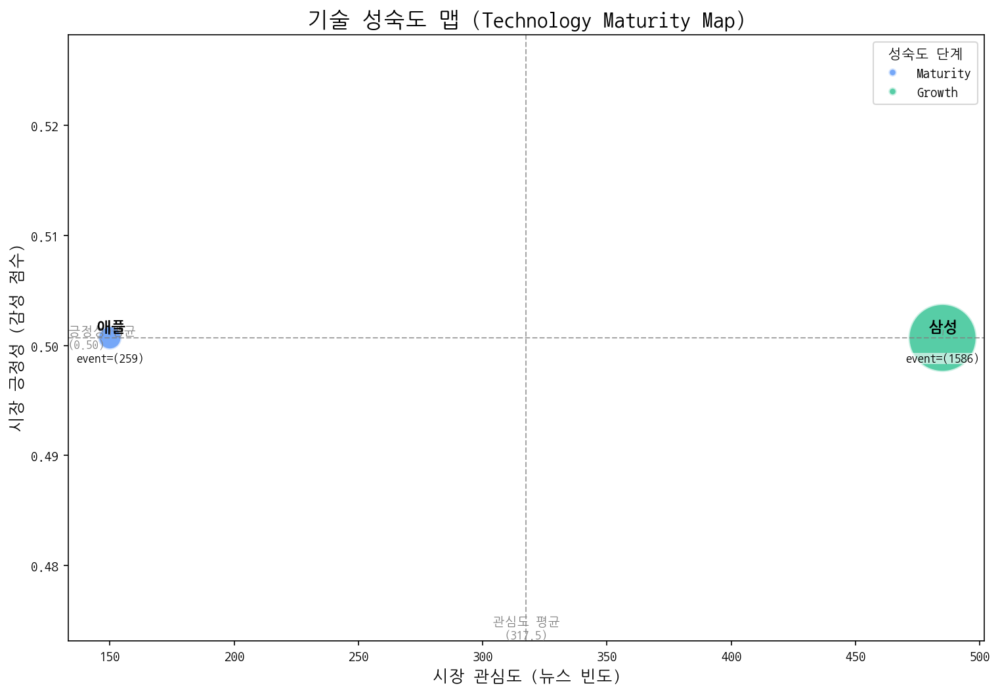
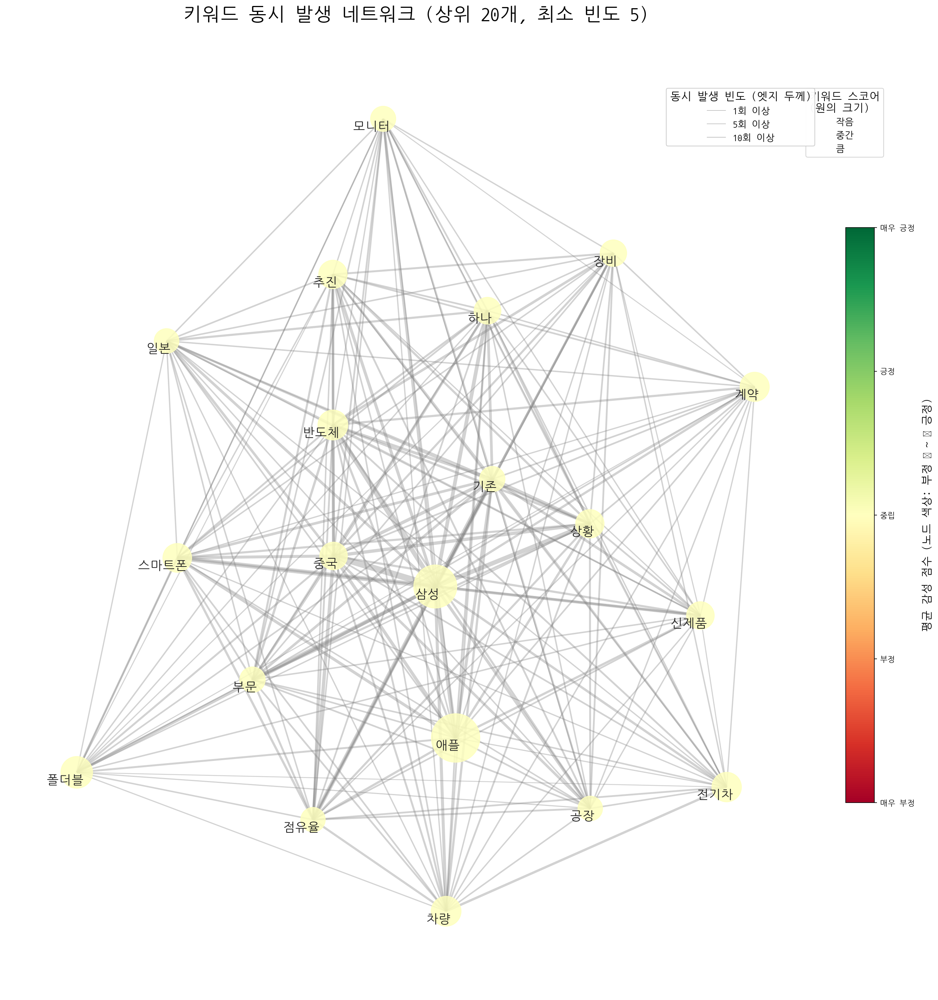
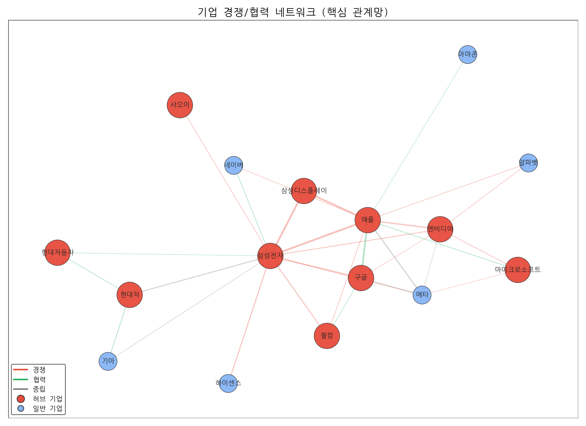
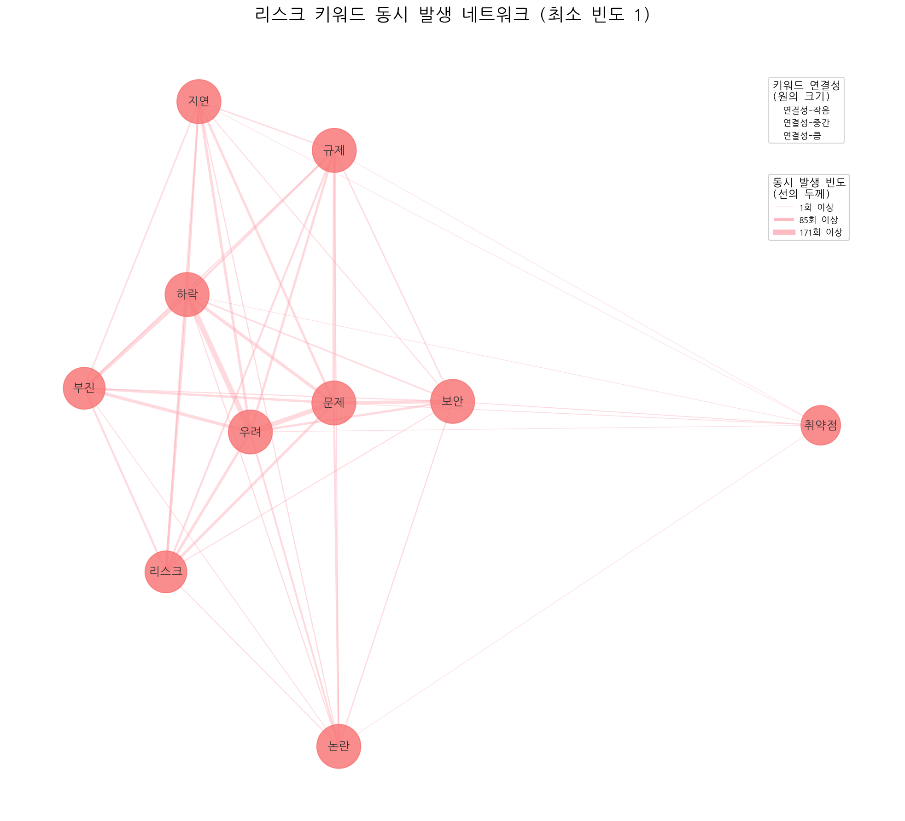
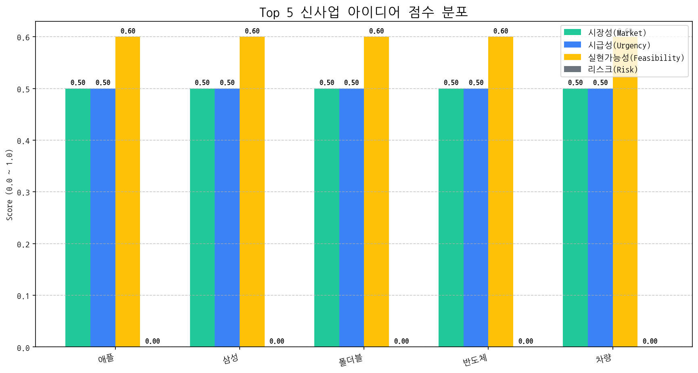

대상: CEO 및 경영진 작성자: [당신의 이름], CSO 날짜: 2024년 5월 15일 (가정)
기회:
위협:
이 브리핑을 바탕으로 다음 단계를 논의하고 구체적인 실행 계획을 수립할 것을 제안합니다.


전제: 시장 관심도와 시장 긍정성은 데이터 기반으로 측정하기 어렵기 때문에, 주어진 토픽들의 내용과 현재 시장 상황에 대한 일반적인 이해를 바탕으로 주관적인 판단을 내렸습니다. 따라서 실제 분석과는 차이가 있을 수 있습니다.
주력 영역 (관심도 높음, 긍정성 높음):
기회 영역 (관심도 낮음, 긍정성 높음):
경쟁/위험 영역 (관심도 높음, 긍정성 낮음):
틈새/장기 영역 (관심도 낮음, 긍정성 낮음):
[선정된 '기회' 토픽명]: LG 시니어 이지 TV 할인
[선정된 '위험' 토픽명]: 폴스타 SUV 전기차 경쟁
| 토픽 | 요약 | 핵심 키워드 |
|---|---|---|
| AI OLED 기술 경쟁 | AI, OLED, 반도체 기술을 중심으로 삼성전자, 중국, 미국 간의 TV 및 디스플레이 기술 경쟁과 관련된 내용입니다. 특히 갤럭시를 포함한 삼성전자의 전략과 시장 상황을 보여줍니다. | ai, oled, 중국 |
| AI OLED 디스플레이 기술 경쟁 | 미중 반도체 기술 패권 경쟁 속에서 AI와 OLED 디스플레이 기술을 적용한 TV 시장을 중심으로 삼성전자와 중국 업체의 경쟁 심화 가능성을 다룬 내용. | ai, oled, 디스플레이 |
| LG 시니어 이지 TV 할인 | LG전자가 시니어 고객을 위한 이지 TV를 할인 판매하는 내용입니다. 헬프 기능과 같은 편의 기능이 강조될 것으로 보입니다. | 시니어, tv, lg |
| 폴스타 SUV 전기차 경쟁 | 폴스타의 새로운 SUV 전기차 모델 판매와 현대차의 관련 동향, 그리고 전기차 시장에서의 자원순환 이슈를 다룸. | 주행, 자원순환, 폴스타 |
| NC vs 삼성 WC | NC와 삼성의 와일드카드 결정전 경기 및 승리 관련 내용. 삼성 선발 투수와 감독 언급. | nc, 시즌, 삼성 |
| 인하대 신소재 유기단열 연구 | 인하대 신소재공학과 학생과 교수가 유기 단열재의 난연 특성을 연구하는 내용입니다. | 학생은, 교수, 신소재공학과 |
| 고려아연 & 재계 | 고려아연 최창걸 명예회장과 재계(한화, GS 등), 정치권(국민의힘) 관련 이슈 논의. 비철금속 사업 관련 내용 포함 가능성. | 부회장, 명예회장, 비철금속 |
| 서면 84㎡ 청약 1순위 | 부산광역시 서면 단지의 84㎡ 아파트 청약이 1순위로 최고 경쟁률을 기록했을 것으로 예상되며, 해당 단지는 2호선 역세권에 위치하고 전용면적을 강조하고 있음. | 서면, 청약, 1순위 |
| 미성년 주주 현황 | 상장사 시총 상위 기업의 미성년 주주 현황 분석 및 1인당 평균 보유 시가총액 비교. | 미성년자, 주주, 상장사 |
| AI 경주 추적 | AI 비전 기술로 경주에서 말의 움직임을 추적하고 화면에 보여주는 기술에 대한 내용입니다. | race, vision, 말을 |
| 영주 근현대 대중교통 개선 | 경북 영주시의 근현대 유산과 스카이(교통수단)를 활용한 관광 활성화를 위해 대중교통 처우 개선 및 5분 거리 조성 등을 촉구하는 내용. | 재가, 촉구했다, 근현대 |
| topic_id | topic_name | momentum_score |
|---|---|---|
| 0 | AI OLED 기술 경쟁 | 1.165 |
| 1 | AI OLED 디스플레이 기술 경쟁 | 1.165 |
| 3 | 폴스타 SUV 전기차 경쟁 | 0 |
| 5 | 인하대 신소재 유기단열 연구 | 0 |
| 6 | 고려아연 & 재계 | 0 |
| 7 | 서면 84㎡ 청약 1순위 | 0 |
| 8 | 미성년 주주 현황 | 0 |
| 9 | AI 경주 추적 | 0 |
| 10 | 영주 근현대 대중교통 개선 | 0 |
| 4 | NC vs 삼성 WC | -0.383 |
| 2 | LG 시니어 이지 TV 할인 | -1.471 |

| 기술 | 단계 | 판단 근거 | |:-----|:---------|:--------------------------------------------------------------------------------------------------------------------------------------------------------------------------------------------------------------------------------------------------------------| | 폴더블 | Error | 429 You exceeded your current quota, please check your plan and billing details. For more information on this error, head to: https://ai.google.dev/gemini-api/docs/rate-limits. To monitor your current usage, head to: https://ai.dev/usage?tab=rate-limit. | | | | * Quota exceeded for metric: generativelanguage.googleapis.com/generate_content_free_tier_requests, limit: 15 | | | | Please retry in 59.542118236s. [violations { | | | | quota_metric: "generativelanguage.googleapis.com/generate_content_free_tier_requests" | | | | quota_id: "GenerateRequestsPerMinutePerProjectPerModel-FreeTier" | | | | quota_dimensions { | | | | key: "model" | | | | value: "gemini-2.0-flash" | | | | } | | | | quota_dimensions { | | | | key: "location" | | | | value: "global" | | | | } | | | | quota_value: 15 | | | | } | | | | , links { | | | | description: "Learn more about Gemini API quotas" | | | | url: "https://ai.google.dev/gemini-api/docs/rate-limits" | | | | } | | | | , retry_delay { | | | | seconds: 59 | | | | } | | | | ] | | 애플 | Maturity | 애플은 뉴스 언급 빈도가 높고, 출시 이벤트가 활발하며, 시장 감성 점수가 중간 수준으로 유지되는 안정적인 성숙기에 접어들었다고 판단됩니다. | | 삼성 | Growth | 높은 출시 빈도와 투자 건수를 고려할 때, 삼성 기술은 시장에서 활발히 성장하는 단계로 판단됩니다. || 기업 | 핵심 집중 토픽 | 전략 방향성 해석 |
|---|---|---|
| 삼성전자 | AI OLED 디스플레이 기술 경쟁, AI OLED 기술 경쟁, LG 시니어 이지 TV 할인 | 삼성전자는 AI 기술을 접목한 OLED 디스플레이 기술 경쟁력 강화에 집중하며, 경쟁사 LG전자의 시니어 TV 시장 공략에 대응하는 차별화된 프리미엄 전략을 추구하고 있습니다. |
| 애플 | AI OLED 기술 경쟁, AI OLED 디스플레이 기술 경쟁, 폴스타 SUV 전기차 경쟁 | 애플은 AI 기술력을 OLED 디스플레이에 접목하여 차세대 디스플레이 경쟁력을 확보하고, 폴스타와의 협력을 통해 전기차 시장 진출을 모색하며 미래 기술 경쟁력을 강화하려는 전략을 추진하고 있습니다. |
| LG전자 | AI OLED 디스플레이 기술 경쟁, AI OLED 기술 경쟁, LG 시니어 이지 TV 할인 | LG전자는 AI 기반 OLED 디스플레이 기술 우위를 통해 프리미엄 TV 시장에서의 경쟁력을 강화하고, 동시에 시니어 고객층을 위한 맞춤형 제품 할인 전략을 통해 시장 점유율 확대를 꾀하고 있습니다. |


| 주요 관계 | 유형 | 액션 아이템 제안 |
|---|---|---|
| 삼성전자 ↔ 애플 | rivalry | 애플 신제품 분석 및 삼성 제품 차별화 포인트 발굴. |
| 삼성디스플레이 ↔ 삼성전자 | rivalry | 삼성전자 차세대 제품 디스플레이 전략 긴급 분석 및 대응 방안 모색 |
| 삼성디스플레이 ↔ 애플 | rivalry | 애플 OLED 공급망 다변화 전략 파악 및 대응 시나리오 준비 |
두 기업이 함께 언급된 문맥 안에서, 키워드의 빈도가 경쟁 > 협력인 경우 'rivalry', 반대의 경우 'partnership'으로 분류

| 아이디어 | 가치 제안 | 총점 |
|---|---|---|
| 애플 | 애플 도입으로 비용/품질/경험을 개선. | 60 |
| 삼성 | 삼성 도입으로 비용/품질/경험을 개선. | 60 |
| 폴더블 | 폴더블 도입으로 비용/품질/경험을 개선. | 60 |
| 반도체 | 반도체 도입으로 비용/품질/경험을 개선. | 60 |
| 차량 | 차량 도입으로 비용/품질/경험을 개선. | 60 |

#### [아이디어 검증: 2주 Action Plan] | Hypothesis | Target | KPI | Owner | Due | |:----------------------------------------------------------------------------------------------------------------|:---------------------------------------------------------|:------------------------------------------------------------------------------|:--------|:-----------| | 기업 고객들은 기존 솔루션 대비 Apple 제품 도입 시 보안 및 데이터 관리 효율성이 향상된다고 인지하고, 추가 비용을 지불할 의향이 있다. | 정보보안 담당자 및 IT 인프라 관리자 5명 이상 인터뷰 (제조, 금융, 공공 각 1개 이상) | 인터뷰 참여자 중 60% 이상이 Apple 제품 도입으로 인한 보안 및 관리 효율성 향상에 대한 긍정적 답변 및 추가 비용 지불 의향 확인 | 사업개발팀 | 2025-11-07 | | Apple 제품 기반 솔루션 도입 시, 특정 산업군 (예: 디자인, 엔지니어링)에서 업무 생산성 및 협업 효율성이 유의미하게 향상된다. | 디자인 및 엔지니어링 관련 기업 3곳 선정, Apple 제품 파일럿 테스트 진행 및 사용자 설문 조사 | 파일럿 테스트 참여자 설문 조사 결과, 70% 이상이 업무 생산성 및 협업 효율성 향상에 긍정적으로 응답 | 기술기획팀 | 2025-11-07 | | Apple 제품 도입에 필요한 MDM(Mobile Device Management) 솔루션 및 관련 기술 지원 파트너십 구축을 통해 B2B 시장 진입 장벽을 낮추고 초기 시장 점유율 확보가 가능하다. | 잠재적 MDM 솔루션 파트너사 3곳과 기술 협력 및 사업 제휴 가능성 논의 | 최소 1곳 이상의 MDM 솔루션 파트너사와 기술 협력 MOU 체결 | 전략제휴팀 | 2025-11-07 |